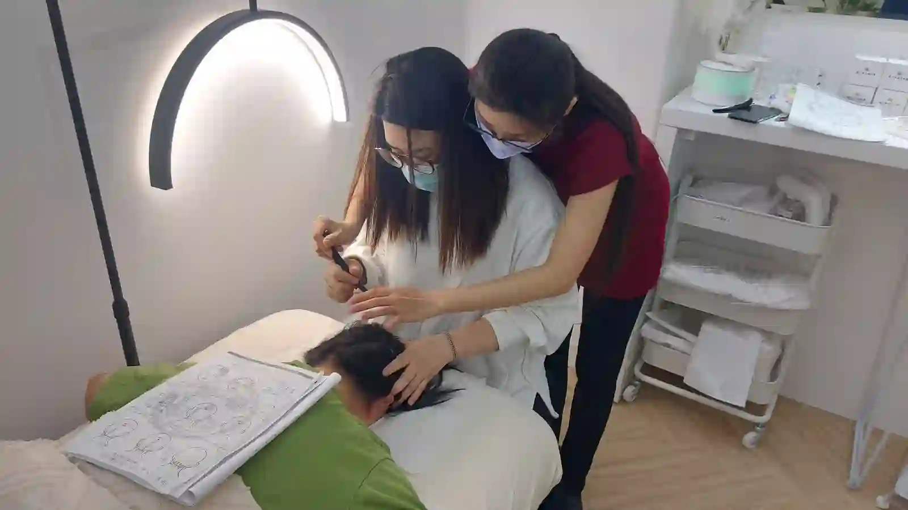

The Bojin Journal · The method
Where Forehead Tightness Actually Starts: Your Scalp and Hairline

Here's an experiment that takes ten seconds. Put your fingertips at your hairline, above your eyebrows, and try to move the skin. Not slide your fingers across it, actually move the scalp itself, the way you can move the skin on the back of your hand.
A Taiwan-based teacher on why forehead work alone fades, how the brow muscle continues past your hairline, and how to include the scalp. Remember: this is a gentle, supported self-care observation you can test on one side of your face—never a forceful press or medical treatment.
For many women over 50, it barely budges. And that, more than anything happening in the skin of your forehead, is often what a stubborn tense forehead is actually about.
Why the forehead and the scalp are one piece
The muscle that lifts your eyebrows doesn't stop at your hairline. It's part of a sheet that runs up and over the top of your skull, anchored front and back, and your forehead is only the front third of it. When you raise your brows to see better, squint at a screen, or hold a worried expression through a long afternoon, you're pulling on the whole sheet, not just the part you can see in the mirror.
So when the forehead feels tight and the usual forehead work only helps for an hour, the reason is often that you've been treating one end of something while the other end stays braced. The part above your hairline never gets touched, because nobody thinks to include it and hair is in the way.
How bojin reaches past the hairline
This is where the order of a session earns its keep. Working the forehead first and then continuing up past the hairline treats the sheet as one piece instead of stopping at an imaginary border.
The brow muscle is one sheet running from your forehead up over the skull. Stopping at the hairline treats one end while the other stays braced.

The tool matters here too. On the forehead you use the broad edge, but past the hairline, hair gets in the way of anything flat. The rounded tip of a stainless steel bojin stick moves between hair and reaches the scalp itself, which is the whole reason it can go where a stone can't. If you're using the gua sha stone you already own, its narrowest corner will do, or your fingertips, which work well on the scalp and are what I use on myself half the time.
One important difference: on the scalp you work dry. Oil in the hairline is a mess nobody wants, and the scalp doesn't need slip the way facial skin does, because you're moving the tissue rather than gliding over it.
The 5 steps, forehead through scalp

Start with the forehead as usual.
Slip, warmth, flat gliding passes from the center outward. Nothing new yet.
Cross the hairline without stopping.
Continue the same upward direction past the hairline, switching to the rounded tip or your fingertips, and drop the oil from here on.
Work in small sections across the front of the scalp.
Slow, small movements, comfortable pressure, pausing anywhere that feels tender. You're aiming to move the scalp, not slide across the hair.
Include the sides above your ears.
The same sheet continues down toward the temples, and this is often the most tender part of all.
Come back down and finish down the neck.
Work back down the forehead and out toward the temples, then the usual neck finish. What you loosened up top still needs the route down.
Honest expectations, and a safety note
Most women notice the forehead feels different than it does after forehead-only work, and that the effect holds a little longer. This is still gentle and temporary, and it builds with consistency rather than arriving in one session.
I want to be careful about one thing: tension headaches and scalp tightness often show up together, and easing tension may feel pleasant. That isn't a treatment for headaches, and a facial routine has no business replacing medical care for them. If you have frequent, severe, or new headaches, see a doctor.
After a week of including the scalp, try moving the skin at your hairline again. That small change in how much it gives you is the thing to watch, more than anything in the mirror.
Quick answers
Why doesn't forehead work alone fix a tight forehead?
The brow muscle is part of a sheet running up over the skull. Working only the forehead treats one end while the other stays braced.
Should I use oil on my scalp?
No. Work the scalp dry. You're moving the tissue rather than gliding over it, and oil in the hairline is a mess you don't need.
What should I use on the scalp?
The rounded tip moves between hair to reach the scalp, or use your fingertips, which work well there. A broad edge can't get past hair.
Does this help tension headaches?
It isn't a treatment for headaches and shouldn't replace medical care. If your headaches are frequent, severe, or new, see a doctor.
Want to see the scalp technique in motion?
My free 3-minute video shows exactly where the forehead ends and the scalp work begins.
Watch the free 3-min videoYu-Ting Lan is a Taiwan-based international bojin instructor and the founder of Héhé Studio. She has taught her bojin method to more than a thousand students, from complete beginners to grandmothers, across Taiwan, Hong Kong, and Malaysia.